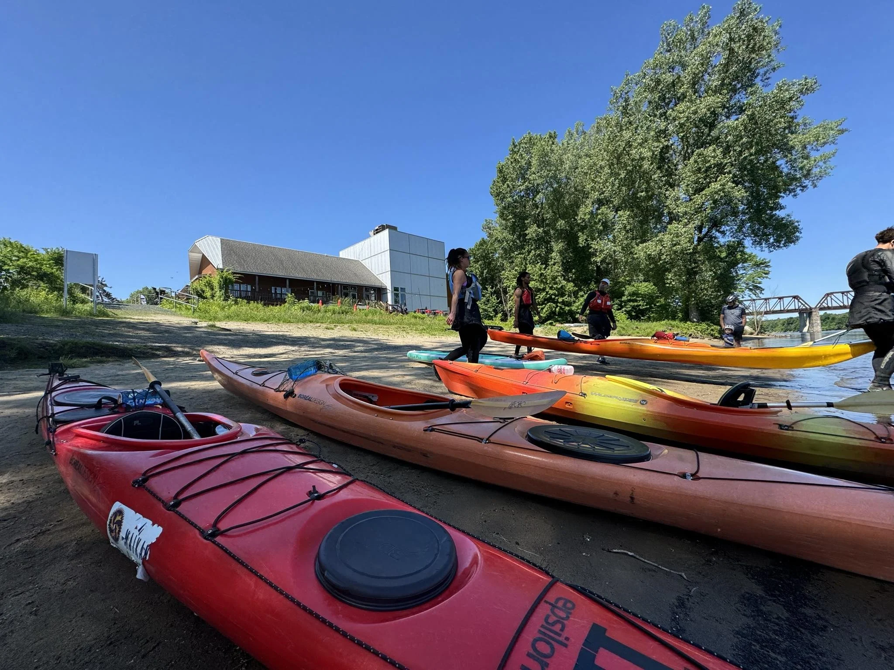
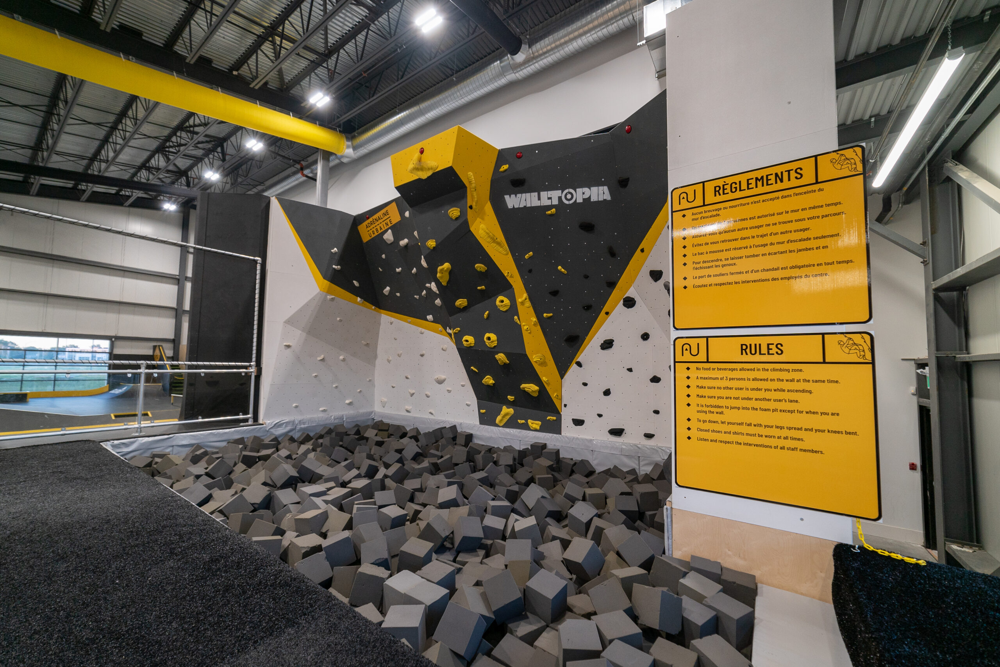
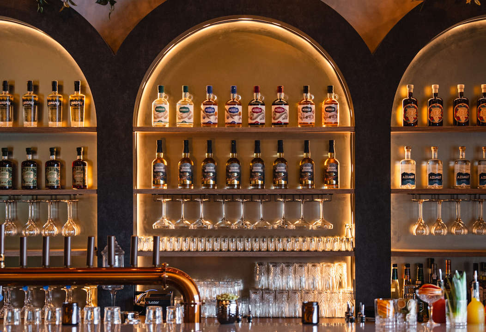
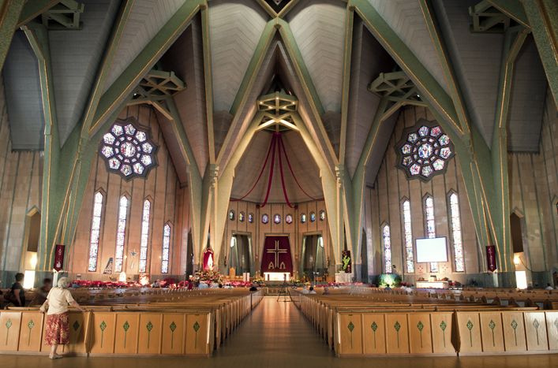
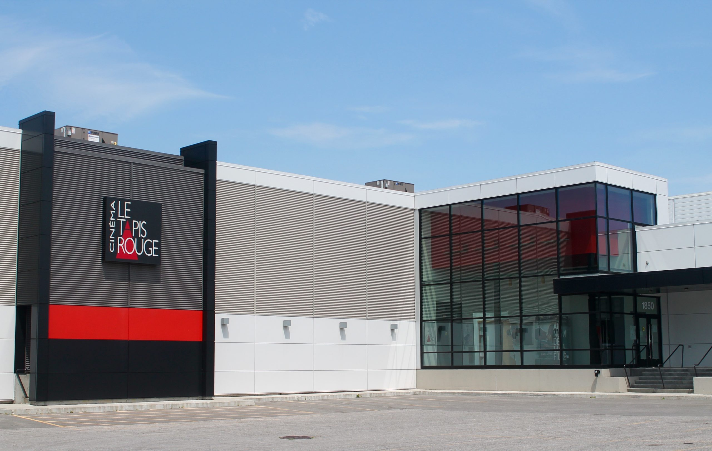
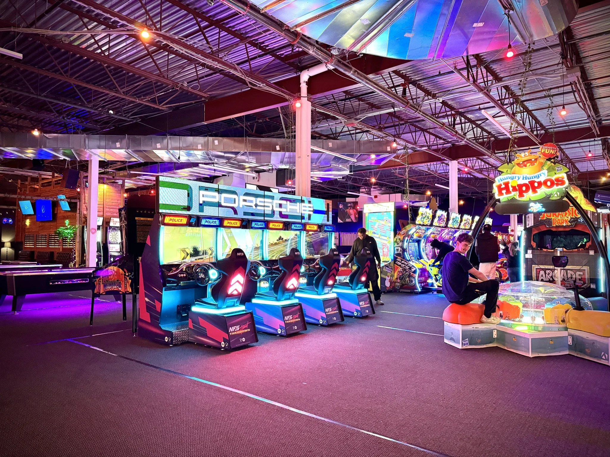

Activités
Découvrez les activités de Trois-Rivières !
Explorez une variété d'activités pour tous les goûts et trouvez facilement quelque chose à faire. Que vous soyez à la recherche de divertissement, de plein air, de culture ou de nouvelles expériences, TRouvé vous aide à découvrir ce que Trois-Rivières a à offrir.
Les catégories
-
Culture et patrimoine
- Musée POP et Boréalis : Explorez l'histoire industrielle et la culture de la région à travers des expositions uniques.
- Vieille prison de Trois-Rivières : Visitez cet ancien établissement de détention pour une visite guidée saisissante.
-
Plein air et sportif
- Parc de l'Île Saint-Quentin : Profitez de la plage, des sentiers de randonnée et des aires de pique-nique à deux pas du centre-ville.
- Parc Pie-XII : Explorez de beaux sentiers de marche, des aires de pique-nique et des installations sportives au cœur de la ville.
-
Divertissement et centre-ville
- Le Vieux-Trois-Rivières : Flânez à pied dans le quartier historique pour admirer l'architecture patrimoniale, les galeries d'art, ainsi que les restaurants et cafés de la rue des Forges.
- O-Volt : Dépensez votre énergie dans ce centre de loisirs intérieur avec parcours ninja et trampolines.
Liste des activités
-

Maïkan Aventure
Faites de la planche à pagaie, du kayak sur la rivière Saint-Maurice ou de l'escalade (intérieure et extérieure), puis mangez sur leur terrasse.
-

Adrénaline Urbaine
Testez ce centre de sports d'action qui regroupe skatepark intérieur/extérieur, escalade, parcours ninja et snowpark.
-

Distillerie Mariana
Découvrez le savoir-faire local des spiritueux québécois à travers un atelier dégustation ou un cocktail sur place.
-

Sanctuaire Notre-Dame-du-Cap (secteur Cap-de-la-Madeleine)
Visitez le deuxième plus grand sanctuaire dédié à la Vierge Marie en Amérique du Nord, célèbre pour sa basilique, son petit sanctuaire de 1720 et ses immenses jardins en bordure du fleuve.
-

Cinéma Le Tapis Rouge
Regardez un film indépendant, québécois ou d'auteur dans ce cinéma de quartier chaleureux avec café-bistro.
-

MontVR
Arcade qui propose des jeux de bar et d'adresse, de la réalité virtuelle et des jeux d'arcade classiques pour tous les âges.